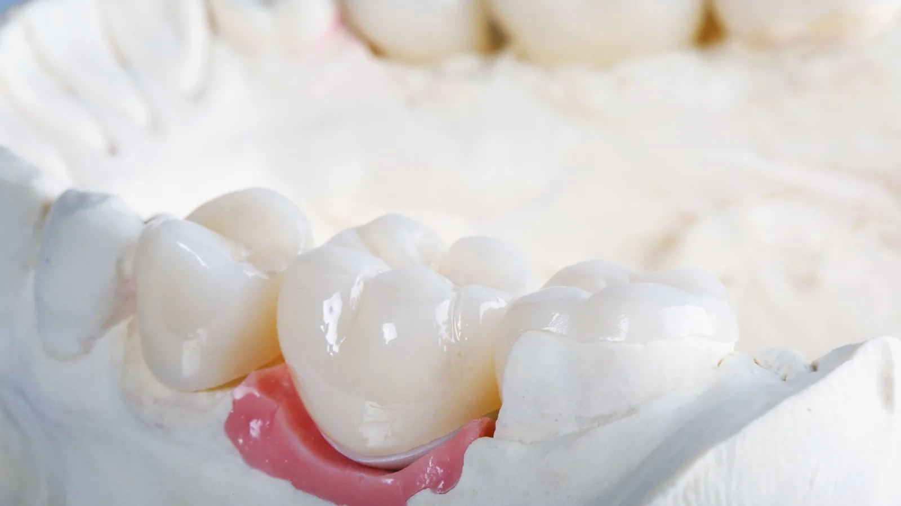

Restorative Dentistry
Holding a tooth together when a filling no longer will.
A crown covers the whole of the visible tooth, binding it together and taking the load off a structure that can no longer take it alone. It is the usual answer for a tooth that has cracked, has been heavily filled over the years, has lost a cusp, or has had root canal treatment and become brittle.
There is a point at which adding more filling material stops helping. A large filling wedged into a weakened tooth acts like a wedge — every bite pushes the remaining walls apart, and eventually one splits, sometimes below the gum where it cannot be saved. A crown works the opposite way, holding everything inward.

Made in a laboratory, not in the chair
Crowns here are made by a dental technician rather than milled chairside on the day. Same-day crowns are convenient, and Dr Meg’s view is straightforward: a technician working with a full range of materials and adequate time produces a better result in fit, contour, shade and the way the porcelain catches the light.
That means two appointments and a temporary crown in between. She considers that a fair trade for a restoration you expect to keep for many years.
What is involved
At the first appointment the tooth is prepared under local anaesthetic — any decay or failing filling removed, the tooth shaped to make room for the crown, and the core built up if needed. A digital intra-oral scan is taken, which avoids the tray of impression putty, and the shade is matched.
A temporary crown is fitted so you can eat and speak normally while the laboratory works. Temporaries are not as strong as the finished crown, so it is worth avoiding very hard or sticky food on that side.
At the second appointment the temporary comes off, the crown is tried in and checked for fit, contact with the neighbouring teeth, shade and bite, then cemented in place. Getting the bite right is not a formality — a crown that sits even slightly high causes soreness and can crack the tooth beneath it.
Materials
The material is chosen for the tooth. Front teeth generally call for a ceramic that reproduces the translucency of natural enamel. Back teeth take heavier loads and may be better served by a stronger material. If you grind, that changes the choice again. Dr Meg will explain what she is recommending and why.
Frequently asked questions
It depends on the tooth, your bite, whether you grind, the health of the gum around it and your home care. Crowns are durable but not permanent, and no dentist can put an honest number on any individual crown. Dr Meg will give you a realistic picture at your assessment.
The preparation is done under local anaesthetic and is generally comfortable. Some tenderness afterwards is common while the tissue settles. As with any treatment, no dentist can promise a completely pain-free appointment.
That is the aim. Shade and shape are matched and made by a technician who can layer porcelain to reproduce the character of the surrounding teeth. Front-tooth crowns are matched with particular care.
Sometimes a filling is the right answer, and Dr Meg will say so. But where too little sound tooth structure remains, a large filling can act as a wedge and lead to a split that costs you the tooth. It is a judgement made tooth by tooth.
Not here. We use laboratory-made crowns and two appointments, for the reasons set out above. You will not be without a tooth in the meantime — a temporary is fitted.
Often, particularly on back teeth. A root-treated tooth has usually lost a good deal of structure and becomes more brittle, so crowning it protects against fracture. Dr Meg will assess whether it is necessary in your case.